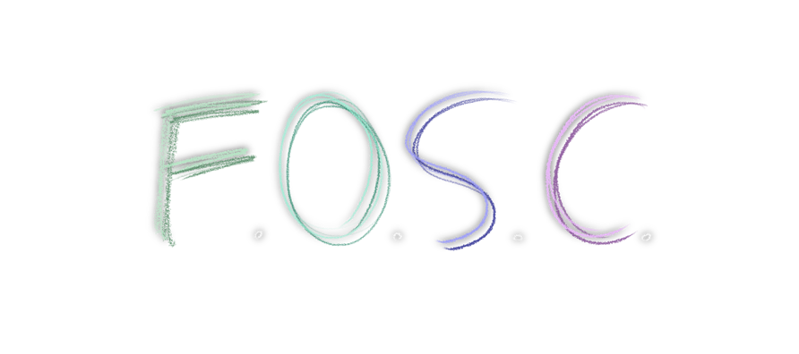
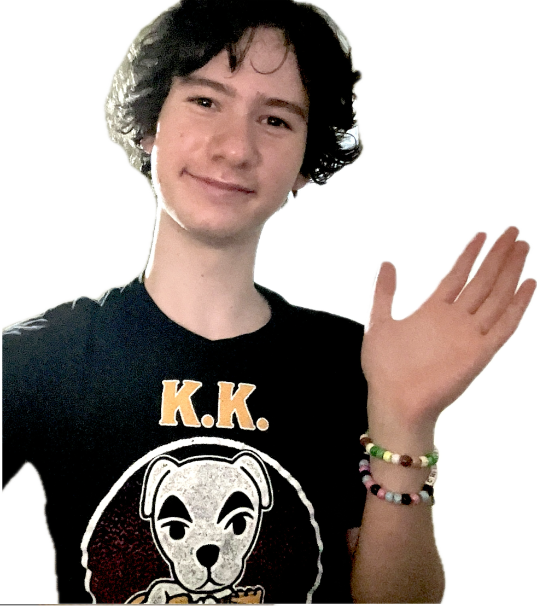

Hey, I'm Caleb // Virtual Overtime, and welcome to my site!
Just like in my content, I preach...


Free and Open Source Creativity.
An open source project, to me, fuels creativity by being accessible to everyone. By having the ability to use a tool, own it, distribute it, and improve it, great things can happen, and if you look around your favorite Linux distribution, you might find that your general use applications are, in fact, free and open source. They're special because they were designed with heart. That's "open source".